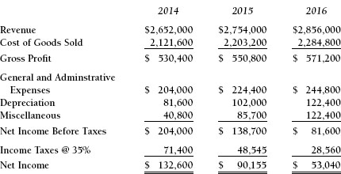
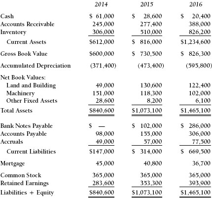
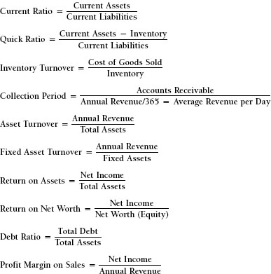
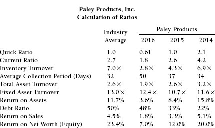
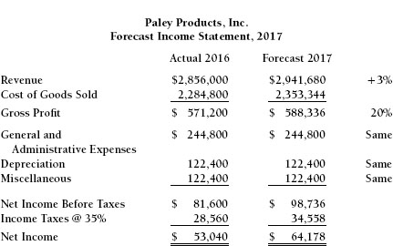

APPENDIX C

Comprehensive Case Study: Paley Products, Inc.
Phase 1
Robert Eng, vice president and loan officer of the First National Bank of Chicago, Illinois, was recently alerted by the bank’s newly installed state-of-the-art computerized loan analysis program to the deteriorating financial position of one of the bank’s clients, Paley Products. The bank requires quarterly financial statements (balance sheet, income statement, and sources and uses of funds) from each of its loan customers. The data from the financial statements are entered into a spreadsheet program that calculates the key ratios, charts trends, and compares a firm’s ratios and trends with those of other firms in the same industry. If any of the company’s ratios is significantly inferior to the industry average, the computer produces an exception report and highlights the problem. If the terms of the loan agreement require either that certain levels of assets be maintained or that a minimum of certain ratios be achieved, the output report will identify deficiencies.
Paley Products is a manufacturer of a full line of computer components. In addition to its regular products, Paley markets special lines of products for both the home and school markets, some of which are also appropriate for seasonal gift items. Its working capital needs have been financed primarily through loans from First National Bank, which has provided Paley Products with a line of credit amounting to $300,000. In accordance with common banking practices, the line of credit agreement provides that the loan shall be paid in full each July.
Earlier analyses of Paley Products had indicated a downward trend in certain performance ratios to levels below what was deemed acceptable in the component manufacturing industry, as reflected by the industry averages,. Mr. Eng had previously discussed his concern with Frank Paley, President of Paley Products, but no corrective action appeared to be taken.
Subsequent analyses continued to reflect this downward trend, and the latest analysis put the current ratio below the required 2.0 specified in the loan agreement. This conclusion was based on the financial information contained in Exhibits C-1, C-2, and C-3. According to provisions in the loan agreement, First National Bank could call the loan at any time after the ratio requirements had been violated. The company would then have 10 days to correct the problem, pay off the loan, or face foreclosure proceedings. The day of reckoning had arrived. While Mr. Eng had no intention of actually enforcing the contract to its fullest at this time, he did intend to use the provisions of the loan agreement to get Mr. Paley to take some decisive actions over the coming months to improve his company’s financial picture.
Higher costs, especially increases in the costs of certain outsourced materials and in the wages of highly skilled technicians, have led to a decline in Paley Products’ margins over the years. Sales increased during this time period because of aggressive marketing programs. Competition within various segments of the computer industry is continuing to grow more intense, both technologically and financially.
Exhibit C-1. Paley Products, Inc. Income Statements for the Years Ending December 31,

Exhibit C-2. Computer Component Manufacturing Industry Financial Ratios, 2016
| Quick Ratio | 1.0 |
| Current Ratio | 2.7 |
| Inventory Turnover | 7.0 |
| Average Collection Period | 32 days |
| Total Asset Turnover | 2.6× |
| Fixed Asset Turnover | 13.0 × |
| Return on Assets | 11.7% |
| Return on Net Worth | 23.4% |
| Debt Ratio | 50.0% |
| Profit Margin on Sales | 4.5% |
Mr. Paley received a copy of the latest analysis from the bank, along with a blunt statement that the bank would insist on complete retirement of the loan unless corrective actions were implemented. Although he was not in complete agreement with the bank’s assessment of his company’s financial condition and was not fully certain of what his future course of action should be, Mr. Paley began to develop a “recovery” plan. He immediately concluded that sales growth could not continue without an increase in the bank line of credit from the current $300,000 to $400,000. Also, progress payments of $100,000 for construction in progress were due the following year. There was a sense of urgency to Mr. Paley’s state of mind at this time, despite the fact that the relationship between Paley Products and First National Bank of Chicago had begun many years earlier.
Exhibit C-3. Paley Products, Inc. Comparative Balance Sheets, December 31,

Industry averages have been constant during this time period. These numbers are based on year-end amounts.
For phase 1, calculate the key ratios for 2014–2016 using the formulas available in Exhibit C-4. How is Paley doing? What are the issues?
Exhibit C-4. Formulas for Ratio Calculations

Phase 2
Here is Mr. Paley’s proposed improvement program:
PALEY PRODUCTS, INC. PROFIT IMPROVEMENT PROGRAM, 2017
Revenue: +3% growth
Gross margin: 20%
Expenses: Same amounts as prior year
Days’ sales outstanding: Improve to 40 days
Inventory turnover: Improve to 4×
Capital expenditures: $100,000
Dividends: None until bank debt is retired
Accruals/mortgage/accounts payable: Same amounts; no changes
He was not sure what bank debt payments he could make or how much debt he could retire, nor was he sure what his cash position would be.
Forecast the income statement, balance sheet, and sources and uses of funds statement for Paley Products. Will the company be able to pay off any of its debt?
Appendix C Answer Key
Phase 1

What issues are faced by Paley Products, as evidenced by these answers. Are they problems of the company? Of the industry? Both?
A Sources and Uses of Funds Statement for the past year is provided as reference.
Notice that each of these numbers ties exactly to the changes in the Paley balance sheets between 2015 and 2016, including the decline of $8,200 in the cash balance.
Phase 2

Paley Products, Inc. Cash Flow Forecast 2017
If the improvements forecast for 2017 are achieved, cash flow will grow significantly. Working capital performance (DSO and Inventory turnover) can never recover past “glories” after years of neglect. Improving inventory by one “turn” and DSO by 10 days is more than adequate to pay off the bank and finance Paley’s future growth. These are not easy, but are possible achievements.